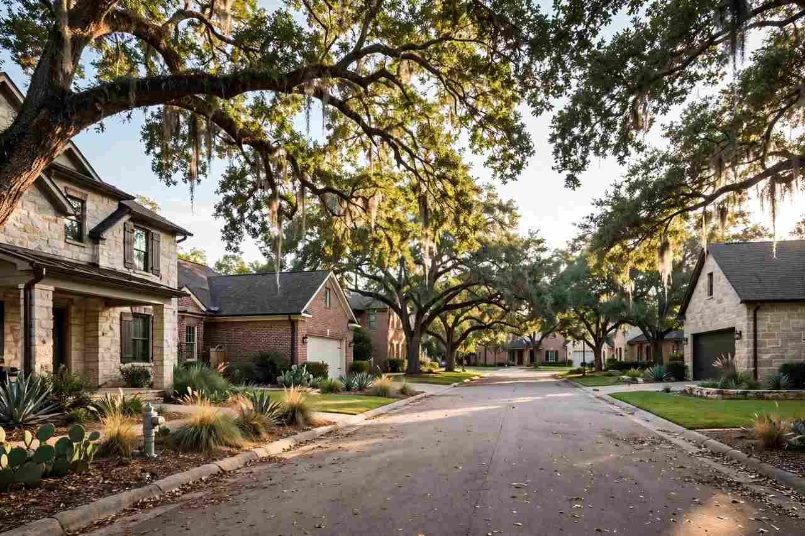

Rodent Control · Lometa, TX
Fast Rodent Control in Lometa, TX
Hearing scratching at night or finding droppings in Lometa? Murvo is a rodent-only specialist offering same-day service from local crews. We identify the species, remove the infestation, clean up the mess, and exclude rodents for good. Pricing is flat-rate and quoted in writing, the work is guaranteed in writing, and coverage extends across Lampasas County for homes and businesses alike. From Mullin, Lampasas, San Saba to every corner of Lampasas County, 1 ZIP codes are covered by local Murvo crews.
24/7Availability
1ZIP codes covered
Same-dayResponse
Licensed · Upfront options · Written guarantees · Fully insured
Lometa at a glance
Local Rodent Control for Lometa, TX.
Lampasas County
Countycentral Texas
RegionKilleen · 40 mi
Nearest metro76 miles northwest of Austin
From Austin1
ZIP codes covered Service by service in Lometa
Rodent Control Services Available in Lometa
Thirty rodent services, one local standard in Lometa: inspection-led, exclusion-first, and quoted in writing before work begins. Browse the full list for Lampasas County below - each section explains what the service involves here, what it typically costs nationally, and how fast we can start.
- 01Rodent Control↗
- 02Rodent Inspection↗
- 03Rodent Removal↗
- 04Rodent Exclusion↗
- 05Rodent Proofing↗
- 06Rat Control↗
- 07Mice Control↗
- 08Mouse Removal↗
- 09Rat Removal↗
- 10Rodent Trapping↗
- 11Rodent Baiting↗
- 12Rodenticide Application↗
- 13Attic Rodent Removal↗
- 14Crawl Space Rodent Removal↗
- 15Wall Rodent Removal↗
- 16Kitchen Rodent Control↗
- 17Garage Rodent Control↗
- 18Commercial Rodent Control↗
- 19Residential Rodent Control↗
- 20Emergency Rodent Removal↗
- 21Same-Day Rodent Control↗
- 22Rodent Damage Repair↗
- 23Rodent Waste Cleanup↗
- 24Rodent Disinfection↗
- 25Rodent Odor Removal↗
- 26Dead Rodent Removal↗
- 27Rodent Dropping Cleanup↗
- 28Rodent Exclusion for Roofs↗
- 29Rodent Exclusion for Vents↗
- 30Rodent Exclusion for Chimneys↗
Rodent Control in Lometa
Rodent Control in Lometa
In Lometa, ranch and suburban single-family homes, older bungalows, and new-build subdivisions give rodents warmth, shelter, and easy routes through rooflines and attic vents, garage door seals, weep holes, and foundation cracks opened by shifting clay soil, especially once nights turn cold across Lampasas County. Our licensed, insured technicians identify the species, map active runways, and build a control plan around your home rather than a generic spray. Every visit is documented with photos, trap records, and clear next steps for your household.
When you need rodent control in Lometa, the job starts with what is actually happening in your part of Lampasas County. Murvo crews work Lometa every week, so they know how Roof rat (Rattus rattus) and Norway rat (Rattus norvegicus) behave around ranch and suburban single-family homes, older bungalows, and new-build subdivisions here - and where they get in: rooflines and attic vents, garage door seals, weep holes, and foundation cracks opened by shifting clay soil. We arrive equipped for the full job, confirm the flat rate in writing before work begins, and cover the whole Lometa area, including Lampasas, San Saba. No call-center runaround and no open-ended hourly billing - just a local crew, a clear plan, and a written quote you approve first. Around Mullin, Lampasas, San Saba, the pattern is similar: Norway rat (Rattus norvegicus) finds rooflines and attic vents, garage door seals, weep holes, and foundation cracks opened by shifting clay soil first, and lasting rodent control has to close those routes.
Consider how a visit unfolds. Throughout, photographs and written notes keep you informed, so progress is something you can see and verify rather than something you are asked to trust. The technician walks the exterior before touching anything indoors, noting gaps, rub marks, and food sources. Inside, attic and crawl-space evidence shapes the trapping plan, which is adjusted visit by visit as numbers change. Cleanup guidance covers contaminated areas safely, and exclusion work closes the route permanently. Photographs taken at the start make those later comparisons honest, because memory alone tends to blur the details.
When you call, tell us what you have seen and when the noises happen. That detail shapes the first visit. Your technician arrives as scheduled, inspects, and lays out findings before quoting. Once you approve, trapping and sealing are booked in sequence, monitoring is scheduled, and the guarantee is left with you in writing at completion. Keep the visit notes we leave behind; together they form a clear record of findings, approvals, completed work, and the monitoring results that closed the job.
Need help quickly in Lometa? Call any time — the emergency line is staffed 24/7, and same-day rodent control appointments are available in most areas. We inspect first, explain the plan in plain language, and put the flat rate in writing before work starts. Around Lometa, ranch and suburban single-family homes, older bungalows, and new-build subdivisions give rodents the most cover, which is why entry points get checked before traps are set.
The honest answer is that it depends on species, activity level, and how much sealing your home needs, which is why Murvo inspects first and then gives you a flat-rate quote in writing. For national context only, Angi's 2026 data averages rat and mouse removal and control at $396, typically $189 to $655; that is not a Murvo price, and your written quote is the figure you pay.
Rodent Inspection in Lometa
Rodent Inspection in Lometa
You do not need to see a rodent to have a rodent problem in Lometa. Droppings in the attic, gnaw marks near rooflines and attic vents, garage door seals, weep holes, and foundation cracks opened by shifting clay soil, or noises after dark are enough reason to book a rodent inspection. Murvo technicians check the whole property, photograph what they find, and give you a prioritized plan plus a flat-rate written quote for any work recommended.
In Lometa, rodent inspection is not a generic spray-and-go service. Rodents exploit rooflines and attic vents, garage door seals, weep holes, and foundation cracks opened by shifting clay soil in ranch and suburban single-family homes, older bungalows, and new-build subdivisions, and a fix that ignores those routes does not last. Murvo's Lometa team inspects first, shows you the evidence - droppings, gnaw marks, entry gaps - and then lays out the work with a flat-rate written quote. We serve all of Lampasas County from Lometa, including Lampasas, San Saba, and every job is covered by our written workmanship guarantee. Coverage for rodent inspection spans 1 ZIP codes in Lampasas County, including 76853.
Timing often tells the story first. The written report that follows ranks repairs clearly, so decisions rest on findings rather than guesswork or pressure. Noises at dusk suggest one pattern; droppings near stored food suggest another. Technicians use what you report to focus the search, then verify it against physical evidence throughout ranch and suburban single-family homes, older bungalows, and new-build subdivisions. They check wiring and insulation for damage, test whether gaps at rooflines and attic vents, garage door seals, weep holes, and foundation cracks opened by shifting clay soil are active, and mark each opening by size and species. Each recommendation in that report traces back to a photographed finding, keeping the whole assessment accountable.
After booking, we confirm your time window by text or call. On arrival, your background-checked technician checks in, protects floors and access points, and works through a set inspection checklist inside and out. Before leaving, they review photos and priorities with you, leave the written findings, and schedule any follow-up work you approve. The inspection itself is backed by licensed, insured service and our written workmanship guarantee on quoted work.
You do not have to wait days for answers in Lometa. Same-day rodent inspection appointments are available in most areas, urgent calls are taken 24/7, and most home inspections take under an hour. You finish the visit with photos, written findings, and flat-rate pricing for anything we recommend. Around Lometa, ranch and suburban single-family homes, older bungalows, and new-build subdivisions give rodents the most cover, which is why entry points get checked before traps are set.
Nationally, a professional rodent inspection typically runs $100 to $200 according to Angi's 2026 data, and it is often credited toward the job if you proceed. Murvo confirms your exact rodent inspection price before the visit and quotes any follow-up work as a flat rate in writing after inspection, so the figure you approve is the figure you pay, with no hourly billing.
Rodent Removal in Lometa
Rodent Removal in Lometa
In ranch and suburban single-family homes, older bungalows, and new-build subdivisions, removal fails when it ignores how rodents actually live: close to food, water, and undisturbed cover near rooflines and attic vents, garage door seals, weep holes, and foundation cracks opened by shifting clay soil. Our rodent removal in Lampasas County starts by mapping that daily pattern, then removes animals room by room, including attics and garages, until monitoring, not optimism, says the home is clear.
Homeowners in Lometa call Murvo for rodent removal because the problem here is specific: Roof rat (Rattus rattus) pressure around ranch and suburban single-family homes, older bungalows, and new-build subdivisions, tight access at rooflines and attic vents, garage door seals, weep holes, and foundation cracks opened by shifting clay soil, and activity that follows the local season. Our Lampasas County crews diagnose the real source before recommending work, explain the options in plain language, and quote one flat rate in writing. Across Lometa - including Lampasas, San Saba - every visit is backed by licensed, insured technicians and our written workmanship guarantee. Homes near Mullin tend to show activity first in Lometa, which is why inspections start with rooflines and attic vents, garage door seals, weep holes, and foundation cracks opened by shifting clay soil.
Removal here is measured in records, not impressions. Each trap is numbered, mapped, and checked on schedule, and every catch is logged against its location. That log shows where activity concentrates, where it is fading, and where a placement needs to move. When the log stays empty across repeat checks, removal is genuinely finished. Sealing recommendations follow immediately, because a clear home with open gaps will not stay clear for long in Lometa. That record also protects you, because it shows exactly when activity ended rather than when visits simply stopped.
Once removal is underway, expect short, predictable visits. Your technician checks each mapped trap, removes catches hygienically, resets what is still needed, and updates the record with you. When catches reach zero, monitoring confirms it, sealing is discussed, and the job closes with a walkthrough and your guarantee paperwork in hand before we leave. At close, prevention advice is tailored to what actually attracted rodents to your property, not copied from a generic checklist.
For active infestations in Lometa, rodent removal can usually start the same day you call, and our team answers 24/7 when a rodent is loose in a living area. The first visit confirms activity and sets traps straight away; return visits then clear and reset them until monitoring shows the property is completely clear. In Lampasas County, activity follows the local season, so timing the work matters as much as the method.
Cost depends on the species, how many animals are active, and how much sealing the home needs afterwards, so Murvo inspects first and quotes one flat rate in writing. For national context only, Angi's 2026 data averages rat and mouse removal at $396, typically $189 to $655. That benchmark is not a Murvo price; your written quote is the exact figure.
Rodent Exclusion in Lometa
Rodent Exclusion in Lometa
Exclusion is also the safest long-term strategy for Lometa homes, because a sealed house needs far less bait and fewer repeat treatments. Murvo's licensed, insured crews finish roof, vent, and chimney work to weatherproof standards, walk every sealed opening with you afterwards, and back the result with a written workmanship guarantee you can hold us to.
In Lometa, rodent exclusion is not a generic spray-and-go service. Rodents exploit rooflines and attic vents, garage door seals, weep holes, and foundation cracks opened by shifting clay soil in ranch and suburban single-family homes, older bungalows, and new-build subdivisions, and a fix that ignores those routes does not last. Murvo's Lometa team inspects first, shows you the evidence - droppings, gnaw marks, entry gaps - and then lays out the work with a flat-rate written quote. We serve all of Lampasas County from Lometa, including Lampasas, San Saba, and every job is covered by our written workmanship guarantee. In Lometa, rodent exclusion calls most often involve ranch and suburban single-family homes, older bungalows, and new-build subdivisions, where rooflines and attic vents, garage door seals, weep holes, and foundation cracks opened by shifting clay soil decide whether the fix holds.
Before any sealing, active rodents are cleared with trapping so nothing is trapped inside the structure. Because exclusion removes the route in rather than relying on chemicals, it reduces the need for rodenticides and supports pet-safe, no-poison control. A final walkthrough shows you every protected opening, and monitoring checks confirm no new activity appears at sealed points. We then work opening by opening around rooflines and attic vents, garage door seals, weep holes, and foundation cracks opened by shifting clay soil, rooflines, and utility penetrations, photographing each finished seal. Every seal is listed on your written guarantee.
After booking rodent exclusion in Lometa, your technician first surveys the whole exterior and confirms which openings are active. You receive a flat-rate written quote listing each seal before work starts. Sealing is then completed opening by opening, photographed as we go, and finished with a walkthrough together. Follow-up monitoring is arranged, and every seal is covered by the written workmanship guarantee. No opening is sealed without being shown to you first.
Rodent exclusion in Lometa usually starts with a survey visit we can often schedule the same day you call. Sealing itself is booked as soon as any active animals are cleared, because nothing is sealed inside. Most homes are fully sealed within days, not weeks, and urgent entry points near wiring or food areas are prioritized first. A Lometa inspection confirms it on site - dropping size, gnaw marks, and entry points tell the story quickly.
For national context, Angi's 2026 data puts basic exclusion at $200 to $600, depending on access and the number of openings. That is a benchmark, not a Murvo price. After surveying your Lometa home, we list every opening that needs sealing and quote one flat rate in writing, so you pay for the work your property actually needs and nothing more.
Rodent Proofing in Lometa
Rodent Proofing in Lometa
Proofing matters most where rodent pressure stays high all year: older ranch and suburban single-family homes, older bungalows, and new-build subdivisions in Lometa, homes near fields, water, or dense vegetation, and properties with cluttered garages or overhanging branches. Our plan separates quick wins you can handle yourself from specialist sealing that needs professional materials, keeping the whole program practical, transparent, and easy to stage over time.
In Lometa, rodent proofing is not a generic spray-and-go service. Rodents exploit rooflines and attic vents, garage door seals, weep holes, and foundation cracks opened by shifting clay soil in ranch and suburban single-family homes, older bungalows, and new-build subdivisions, and a fix that ignores those routes does not last. Murvo's Lometa team inspects first, shows you the evidence - droppings, gnaw marks, entry gaps - and then lays out the work with a flat-rate written quote. We serve all of Lampasas County from Lometa, including Lampasas, San Saba, and every job is covered by our written workmanship guarantee. Around Mullin, Lampasas, San Saba, the pattern is similar: Norway rat (Rattus norvegicus) finds rooflines and attic vents, garage door seals, weep holes, and foundation cracks opened by shifting clay soil first, and lasting rodent proofing has to close those routes.
Proofing starts with a whole-property assessment inside and out, from overhanging branches and cluttered garages to unsealed vents and gaps under doors. The plan typically combines structural sealing of utility entries and foundation cracks with mesh screening on vents, chimneys, and rooflines, plus door sweeps where light shows underneath. We also address attractants: securing pet food and bird seed storage, trimming vegetation away from walls, and clearing harborage. Every item is prioritized so essential work happens first. Photos show each weakness we find.
Arrange a survey at a time that suits you; there is no emergency, so scheduling stays relaxed. You then receive a written quote separating essential work from optional improvements, and nothing proceeds without your say-so. Your technician walks every side of the property with you, photographs weak points, and talks through the plan in plain language. Staging the work is fine; essential sealing can proceed first while optional improvements wait until a season or budget that suits you better.
Rodent proofing is preventive, so there is rarely a rush, but surveys in Lometa can often be arranged the same day you call, and always within a few days. Most proofing work is completed in a single visit once you approve the plan, and booking before colder weather gives your home protection ahead of the seasonal rush indoors. If you are seeing signs now, an inspection this week is the fastest way to know which situation you are in.
For national context, Angi's 2026 data puts exclusion, the core of proofing, at $200 to $600 for basic work. That figure is a benchmark, not a Murvo price. After surveying your Lometa property, we separate quick homeowner wins from specialist sealing and quote the professional work as one flat rate in writing, so you can stage spending sensibly.
Rat Control in Lometa
Rat Control in Lometa
Rat problems escalate quietly across Lampasas County: gnawed wiring, contaminated insulation, and droppings spreading through storage areas before anyone sees an animal. Murvo answers with same-day appointments where available and a 24/7 line for urgent cases. Every visit is documented, trapped rats are removed hygienically, and the program finishes with exclusion so the next group cannot simply move in.
In Lometa, rat control is not a generic spray-and-go service. Rodents exploit rooflines and attic vents, garage door seals, weep holes, and foundation cracks opened by shifting clay soil in ranch and suburban single-family homes, older bungalows, and new-build subdivisions, and a fix that ignores those routes does not last. Murvo's Lometa team inspects first, shows you the evidence - droppings, gnaw marks, entry gaps - and then lays out the work with a flat-rate written quote. We serve all of Lampasas County from Lometa, including Lampasas, San Saba, and every job is covered by our written workmanship guarantee. Around Mullin, Lampasas, San Saba, the pattern is similar: Norway rat (Rattus norvegicus) finds rooflines and attic vents, garage door seals, weep holes, and foundation cracks opened by shifting clay soil first, and lasting rat control has to close those routes.
Control starts with species and route identification, because roof rats and Norway rats behave and enter very differently. We then pair the program with roofline and entry-point exclusion, plus attic removal and cleanup where nests are found overhead. Technicians pre-bait unset traps along proven runways so wary rats feed confidently, then set them and return to check, clear, and adjust placements until activity stops. Trapped rats are removed hygienically, and each visit is documented with locations and counts. Progress is visible at every visit.
Between visits, keep pet food secured and avoid moving any traps, even slightly, since position matters. The program closes only when monitoring confirms activity has ended and exclusion is finished, with your guarantee confirmed in writing at sign-off. Your background-checked technician returns on schedule, removes trapped rats promptly, adjusts placements, and reports counts plainly. Keep gates and access points available on scheduled days where possible, since uninterrupted checks keep the program on its planned timetable.
Rats do not wait, and neither do we: rat control in Lometa can usually start with a same-day inspection, and urgent calls are answered 24/7. Pre-baiting begins on the first visit once you approve the written quote, traps are set as soon as rats are feeding confidently, and scheduled checks keep the program moving until activity stops. The written quote for your Lometa property will spell out exactly which of these applies before any work starts.
Species, colony size, and the number of entry points to seal all affect rat work, which is why Murvo inspects first and quotes one flat rate in writing. Angi's 2026 figures, given for national context only, average rat control and removal at $396 and typically run $189 to $655; the written quote for your Lometa home is the exact price.
Mice Control in Lometa
Mice Control in Lometa
Most Lometa mouse problems announce themselves in the kitchen first: droppings in a drawer, a chewed corner on stored food, movement behind the kickboard. Murvo surveys those hotspots, clusters traps where mice actually travel, seals gaps, and covers the program with one flat-rate written quote approved in advance.
Homeowners in Lometa call Murvo for mice control because the problem here is specific: Roof rat (Rattus rattus) pressure around ranch and suburban single-family homes, older bungalows, and new-build subdivisions, tight access at rooflines and attic vents, garage door seals, weep holes, and foundation cracks opened by shifting clay soil, and activity that follows the local season. Our Lampasas County crews diagnose the real source before recommending work, explain the options in plain language, and quote one flat rate in writing. Across Lometa - including Lampasas, San Saba - every visit is backed by licensed, insured technicians and our written workmanship guarantee. Seasonal timing matters for mice control in Lometa: rodents surge in Lometa from September through March.
Our integrated approach favors trapping and sealing over baits, with genuinely pet-safe options for family homes. Droppings in cabinets are never dry-swept; following CDC guidance, surfaces are disinfected first so contamination is not spread into the air, and nesting debris is bagged and removed. Food-storage advice removes the attraction that drew mice in, and sealing is completed as whole-home proofing so kitchens, attics, and voids stay clear after the program ends. Catch records show exactly how numbers fall each visit.
During the program, store opened food in sealed containers and keep trap areas undisturbed. At the end you review the catch record together, receive prevention advice, and confirm the written guarantee before close. Your background-checked technician returns to clear and reset clusters, adjusts placements if the pattern shifts, and completes sealing once numbers fall. Prevention notes cover the exact storage and sealing issues found at your home, making them practical rather than generic advice.
Mice multiply fast, so mice control in Lometa is built to start fast too: a survey can often be arranged the same day you call, with traps set on that first visit once the quote is approved. Because mice investigate new objects quickly, catches usually begin soon after, and check visits follow until a final confirmation shows activity has stopped. In Lampasas County, activity follows the local season, so timing the work matters as much as the method.
Mouse work is priced by the number of rooms affected and the amount of sealing involved, so Murvo surveys first and quotes one flat rate in writing. For national context only, Angi's 2026 data averages rat and mouse control and removal at $396, typically $189 to $655. That is not a Murvo price; your written quote is exact.
Mouse Removal in Lometa
Mouse Removal in Lometa
What does proper removal include beyond the traps themselves? Hygienic clearing of droppings and nesting, disinfection of affected cabinets, and sealing that stops the next mice using the same scent trails. Murvo delivers that complete finish with licensed, insured technicians and a written workmanship guarantee on the completed work.
When you need mouse removal in Lometa, the job starts with what is actually happening in your part of Lampasas County. Murvo crews work Lometa every week, so they know how Roof rat (Rattus rattus) and Norway rat (Rattus norvegicus) behave around ranch and suburban single-family homes, older bungalows, and new-build subdivisions here - and where they get in: rooflines and attic vents, garage door seals, weep holes, and foundation cracks opened by shifting clay soil. We arrive equipped for the full job, confirm the flat rate in writing before work begins, and cover the whole Lometa area, including Lampasas, San Saba. No call-center runaround and no open-ended hourly billing - just a local crew, a clear plan, and a written quote you approve first. Around Mullin, Lampasas, San Saba, the pattern is similar: Norway rat (Rattus norvegicus) finds rooflines and attic vents, garage door seals, weep holes, and foundation cracks opened by shifting clay soil first, and lasting mouse removal has to close those routes.
Trap-based removal is the default here for practical reasons. Cleanup follows the same care: droppings and nesting are never dry-swept, surfaces are disinfected first, and waste is bagged and removed hygienically. Once activity ends, access points are sealed thoroughly, and advice on storage and scent-trail cleaning helps the kitchen stay clear. It is safer around children and pets, results are visible and countable, and no animal is left to die inside a hidden void. Monitoring after sealing confirms the finish, so the result rests on evidence rather than a hopeful guess.
For mice active in living areas, call and we will aim for a same-day start where available. The first visit surveys nesting sites, sets out the multi-trap plan, and confirms your written quote. Traps are placed only after approval, return visits are booked ahead, and you receive a plain update after every check without chasing. Rooms are returned to normal use as soon as their checks are clear, and we tell you plainly which areas those are.
In Lometa, mouse removal can often begin the same day you call, especially where mice are active in kitchens or living areas. The first visit surveys nesting sites and sets traps immediately after you approve the quote; because mice investigate traps quickly, catches usually start fast, and return visits continue until numbers reach zero. If you are seeing signs now, an inspection this week is the fastest way to know which situation you are in.
Rooms involved and sealing needed determine the cost of removal, so we survey first and agree a flat rate in writing before work begins. As national context only, Angi's 2026 data averages rat and mouse removal at $396, with a typical range of $189 to $655; that benchmark is not a Murvo price, and your written quote covers your exact program.
Rat Removal in Lometa
Rat Removal in Lometa
If rats are active in your Lometa home right now, Murvo offers a same-day response and a clear written plan, with lines open 24/7 for urgent cases. Removal is delivered as one coordinated job: trapping, hygienic disposal, prevention, and a final walkthrough with monitoring evidence, so you are never asked to simply take our word that activity ended.
When you need rat removal in Lometa, the job starts with what is actually happening in your part of Lampasas County. Murvo crews work Lometa every week, so they know how Roof rat (Rattus rattus) and Norway rat (Rattus norvegicus) behave around ranch and suburban single-family homes, older bungalows, and new-build subdivisions here - and where they get in: rooflines and attic vents, garage door seals, weep holes, and foundation cracks opened by shifting clay soil. We arrive equipped for the full job, confirm the flat rate in writing before work begins, and cover the whole Lometa area, including Lampasas, San Saba. No call-center runaround and no open-ended hourly billing - just a local crew, a clear plan, and a written quote you approve first. In Lometa, rat removal calls most often involve ranch and suburban single-family homes, older bungalows, and new-build subdivisions, where rooflines and attic vents, garage door seals, weep holes, and foundation cracks opened by shifting clay soil decide whether the fix holds.
We lead with trapping and exclusion in an integrated, pet-conscious approach, using locked bait stations only where genuinely justified and monitored on schedule. After clearance, contaminated insulation areas can be sanitized, and droppings are never dry-swept: following CDC guidance, surfaces are disinfected first before waste is removed. Monitoring devices and a final walkthrough then provide documented evidence that activity has ended, and ongoing proofing keeps drains, vents, and rooflines checked afterwards. That evidence is always shared with you in writing.
Book and we will agree a visit time, with same-day appointments for active infestations where available. Your technician assesses the colony, explains each stage, and confirms the written quote before pre-baiting begins. Repeat visits are scheduled in advance, progress is reported after each one, and sealing follows once catches stop and monitoring stays clear. Every visit is documented with counts and locations, so the final clearance rests on a complete record rather than a single quiet check.
Rats in a living area cannot wait for a routine slot. In Lometa, rat removal can usually start the same day you call and our line answers 24/7 for urgent cases. Pre-baiting starts on the first visit after you approve the written quote, traps are set once rats feed confidently — typically within days — and frequent returns run until monitoring confirms the colony is gone. In Lampasas County, activity follows the local season, so timing the work matters as much as the method.
Colony size, access, and the sealing needed afterwards drive the price, so Murvo assesses the property first and quotes a flat rate in writing covering the full program. Angi's 2026 data, for national context only, averages rat removal at $396 and typically ranges from $189 to $655; that is a benchmark, not a Murvo price.
Rodent Trapping in Lometa
Rodent Trapping in Lometa
For Lometa households who want a poison-free route, trapping delivers measurable results without chemicals in the home. Each catch is recorded by location, building a picture of movement through ranch and suburban single-family homes, older bungalows, and new-build subdivisions via rooflines and attic vents, garage door seals, weep holes, and foundation cracks opened by shifting clay soil until numbers fall to zero. Murvo's licensed, insured technicians then recommend exclusion sealing and cleanup, and the whole program is backed by a written workmanship guarantee.
In Lometa, rodent trapping is not a generic spray-and-go service. Rodents exploit rooflines and attic vents, garage door seals, weep holes, and foundation cracks opened by shifting clay soil in ranch and suburban single-family homes, older bungalows, and new-build subdivisions, and a fix that ignores those routes does not last. Murvo's Lometa team inspects first, shows you the evidence - droppings, gnaw marks, entry gaps - and then lays out the work with a flat-rate written quote. We serve all of Lampasas County from Lometa, including Lampasas, San Saba, and every job is covered by our written workmanship guarantee. Around Mullin, Lampasas, San Saba, the pattern is similar: Norway rat (Rattus norvegicus) finds rooflines and attic vents, garage door seals, weep holes, and foundation cracks opened by shifting clay soil first, and lasting rodent trapping has to close those routes.
Adjustment is where experience shows. If catches cluster at one end of a runway, placements concentrate there; if a route goes quiet while another warms up, devices move accordingly. Baits are refreshed and matched to what the species is already eating nearby. Households receive a simple map of device locations and safety guidance for children and pets. As numbers fall toward zero, attention shifts to exclusion recommendations and cleanup, converting a trapping program into lasting protection. Households can follow that adjustment process through the shared catch log, which records every change of position.
After booking, we confirm your time window and any pet or child considerations for trap placement. The program ends with a monitoring check and a clear written summary. On arrival, your background-checked technician explains each device location and what to expect between visits. Follow-up checks are booked ahead, catches are removed promptly and hygienically, and placements are adjusted as the pattern changes. You always know what was caught and where.
In Lometa, a rodent trapping program can usually start the same day you call, with traps placed or pre-baiting begun on the first visit after you approve the quote. Mice often investigate within the first night, while wary rats need a few days of pre-baiting before traps are set. Scheduled checks then keep the program moving until numbers reach zero. A Lometa inspection confirms it on site - dropping size, gnaw marks, and entry points tell the story quickly.
Trapping is usually quoted as part of a complete removal program rather than by the trap, and the price depends on species, activity level, and how many check visits are needed. Murvo inspects first and quotes one flat rate in writing covering the program and its check visits, so there are no per-visit surprises and no hourly billing at any stage.
Rodent Baiting in Lometa
Rodent Baiting in Lometa
Most Lometa baiting requests start with returning droppings outdoors, around garages, sheds, or fence lines. Murvo answers carefully: activity is mapped first, trapping and exclusion come first, and any stations used are locked and tamper-resistant. One flat-rate written quote covers placement, monitoring, and eventual removal of every station.
When you need rodent baiting in Lometa, the job starts with what is actually happening in your part of Lampasas County. Murvo crews work Lometa every week, so they know how Roof rat (Rattus rattus) and Norway rat (Rattus norvegicus) behave around ranch and suburban single-family homes, older bungalows, and new-build subdivisions here - and where they get in: rooflines and attic vents, garage door seals, weep holes, and foundation cracks opened by shifting clay soil. We arrive equipped for the full job, confirm the flat rate in writing before work begins, and cover the whole Lometa area, including Lampasas, San Saba. No call-center runaround and no open-ended hourly billing - just a local crew, a clear plan, and a written quote you approve first. Around Mullin, Lampasas, San Saba, the pattern is similar: Norway rat (Rattus norvegicus) finds rooflines and attic vents, garage door seals, weep holes, and foundation cracks opened by shifting clay soil first, and lasting rodent baiting has to close those routes.
Baiting here sits inside a wider sequence, never outside it. Exclusion work seals the structure, trapping clears animals already indoors, and only then do locked stations address the outdoor population along fence lines and runways. Each station is anchored, labeled, and photographed, with its location recorded. Monitoring visits log consumption precisely, and falling consumption, confirmed by other signs, decides when stations are reduced and finally removed altogether. Inspection maps activity and identifies where pressure originates. Those logs become especially important when activity fades, because several quiet checks must agree before stations come out.
After booking, we confirm a time window and talk through where pets play and children gather, so placement planning starts before we arrive. Follow-up checks are booked ahead, consumption is reported to you, and the program ends with stations removed and sealing recommendations confirmed. On the day, your background-checked technician inspects first, agrees each station location with you, and secures and labels every unit. Nothing is placed anywhere you have not approved.
In Lometa, rodent baiting starts with an inspection visit we can often arrange the same day you call. Stations are only placed after activity is mapped and you approve the written quote and each location, so setup is deliberate rather than rushed. Monitoring visits then run on a fixed schedule until consumption stops and activity is confirmed clear. A Lometa inspection confirms it on site - dropping size, gnaw marks, and entry points tell the story quickly.
Baiting cost depends on how many locked stations your property needs and how long monitoring runs, so Murvo inspects and maps activity first, then quotes one flat rate in writing covering placement and scheduled checks. There are no per-visit surprises, and because our approach is exclusion-first, the goal is always to reduce and eventually remove stations, not maintain them forever.
Rodenticide Application in Lometa
Rodenticide Application in Lometa
Our approach in Lometa is exclusion-first: seal entry points, trap active animals, and shrink the need for chemical control quickly. Where rodenticide application is genuinely justified for Roof rat (Rattus rattus) or Norway rat (Rattus norvegicus), a licensed technician maps, labels, and anchors every station, records amounts at each visit, and retrieves dead rodents promptly where accessible to reduce odor and secondary risks.
In Lometa, rodenticide application is not a generic spray-and-go service. Rodents exploit rooflines and attic vents, garage door seals, weep holes, and foundation cracks opened by shifting clay soil in ranch and suburban single-family homes, older bungalows, and new-build subdivisions, and a fix that ignores those routes does not last. Murvo's Lometa team inspects first, shows you the evidence - droppings, gnaw marks, entry gaps - and then lays out the work with a flat-rate written quote. We serve all of Lampasas County from Lometa, including Lampasas, San Saba, and every job is covered by our written workmanship guarantee. The Lometa crews who handle rodenticide application also handle the follow-through - proofing, cleanup, and monitoring - so one visit can close the whole problem.
Application begins with a thorough inspection to confirm species and activity levels and to decide whether rodenticide is needed at all; often, professional trapping plus controlled outdoor baiting is enough, and if trapping alone can solve your problem safely, that is the route we recommend first. When treatment is justified, we follow Inspect, Remove, Exclude, Clean, and Monitor: stations are mapped, labeled, anchored, and checked on schedule, with amounts recorded at every visit. Products stay inside locked stations at all times.
Booking rodenticide application in Lometa starts with an inspection visit, often available the same day. If you proceed, stations are installed locked and labeled, monitoring visits are scheduled, and treatment continues only while monitoring data supports it, under our written workmanship guarantee. Your licensed technician confirms whether treatment is justified, explains safer alternatives first, and gives you a flat-rate written quote before anything is applied. You can stop the program at any point.
In Lometa, rodenticide application begins with an inspection we can often schedule the same day you call, because no responsible application happens without one. If treatment is justified and you approve the written quote, locked stations are installed on that visit. Monitoring then runs on schedule, and treatment stops as soon as data shows activity has ended. Murvo's Lometa crews explain the finding either way, and the flat-rate quote leaves the decision with you.
Application cost depends on the number of locked stations, the product required under Texas rules, and how long monitoring runs. Murvo inspects first, explains whether trapping or exclusion could avoid chemical control entirely, and then quotes one flat rate in writing before work begins. The quote covers scheduled monitoring visits, so there are no per-visit surprises later.
Attic Rodent Removal in Lometa
Attic Rodent Removal in Lometa
In ranch and suburban single-family homes, older bungalows, and new-build subdivisions, attics reward rodents generously: warm insulation for nesting, quiet during daylight, and access through rooflines and attic vents, garage door seals, weep holes, and foundation cracks opened by shifting clay soil that stays invisible from the ground across Lampasas County. Our technicians photograph nests, droppings, and gnawed cables, check for young, and examine adjoining crawl spaces so connected activity is not left behind.
Homeowners in Lometa call Murvo for attic rodent removal because the problem here is specific: Roof rat (Rattus rattus) pressure around ranch and suburban single-family homes, older bungalows, and new-build subdivisions, tight access at rooflines and attic vents, garage door seals, weep holes, and foundation cracks opened by shifting clay soil, and activity that follows the local season. Our Lampasas County crews diagnose the real source before recommending work, explain the options in plain language, and quote one flat rate in writing. Across Lometa - including Lampasas, San Saba - every visit is backed by licensed, insured technicians and our written workmanship guarantee. Coverage for attic rodent removal spans 1 ZIP codes in Lampasas County, including 76853.
Attic work follows Inspect, Remove, Exclude, Clean, and Monitor. Once clear, roofline entry points are sealed with metal mesh and flashing as part of wider proofing, and dropping cleanup and disinfection are arranged where insulation is contaminated. A detailed inspection covers the attic, roof, and eaves, identifying species, nests, droppings, and gnawed cables. Targeted, humane trapping is then set in the attic to clear active animals quickly, with checks on schedule. Monitoring traps stay briefly after sealing to confirm the attic is empty and quiet.
After booking, we confirm safe attic access and any pets or stored items to work around. Follow-up visits are booked ahead to clear traps and complete sealing. A final monitoring check and walkthrough confirm the result before we close the job. On arrival, your background-checked technician inspects, explains the plan in plain language, and starts trapping once you approve the written quote. Insulation and wiring findings are reported to you too.
Overhead scratching in Lometa often gets a same-day attic rodent removal visit, and attics with chewed wiring are prioritized because of the fire risk. Trapping starts on the first visit once you approve the written quote, checks run on schedule, and most attics are cleared and sealed within days. Monitoring stays in place briefly afterwards to confirm nothing remains inside. That is also why Murvo pairs removal with exclusion in Lometa - treating the animal without closing rooflines and attic vents, garage door seals, weep holes, and foundation cracks opened by shifting clay soil rarely lasts.
Activity levels, roofline sealing, and whether contaminated insulation needs cleanup all affect attic pricing, so Murvo inspects first and quotes one flat rate in writing for the removal program. Cleanup options are priced separately in writing before you decide, so nothing is added once work is underway.
Crawl Space Rodent Removal in Lometa
Crawl Space Rodent Removal in Lometa
In ranch and suburban single-family homes, older bungalows, and new-build subdivisions, the space underneath offers rodents shelter, burrowing ground at vents, and pipe runs reached through rooflines and attic vents, garage door seals, weep holes, and foundation cracks opened by shifting clay soil across Lampasas County. Standing water and leaking pipes raise pressure further, so technicians flag moisture problems during inspection too. Removal also traces wall-void routes upward, because below-house activity often connects to the attic.
In Lometa, crawl space rodent removal is not a generic spray-and-go service. Rodents exploit rooflines and attic vents, garage door seals, weep holes, and foundation cracks opened by shifting clay soil in ranch and suburban single-family homes, older bungalows, and new-build subdivisions, and a fix that ignores those routes does not last. Murvo's Lometa team inspects first, shows you the evidence - droppings, gnaw marks, entry gaps - and then lays out the work with a flat-rate written quote. We serve all of Lampasas County from Lometa, including Lampasas, San Saba, and every job is covered by our written workmanship guarantee. Around Mullin, Lampasas, San Saba, the pattern is similar: Norway rat (Rattus norvegicus) finds rooflines and attic vents, garage door seals, weep holes, and foundation cracks opened by shifting clay soil first, and lasting crawl space rodent removal has to close those routes.
The sequence is Inspect, Remove, Exclude, Clean, and Monitor. After clearance, vent exclusion with sturdy mesh and sealing of pier and plumbing gaps close the space, and waste cleanup removes droppings and nesting material. A full under-home inspection with photo documentation establishes species, nesting areas, and damage to vapor barrier and pipe insulation. Targeted trapping then removes active rats and mice below the house, with checks on schedule. Monitoring checks confirm activity has ended before we close the job properly.
Schedule an under-home inspection, usually within days and sooner when odors reach living areas. Your technician photographs conditions below, explains findings in plain language, and confirms the written quote before any trapping. Clearance, vent screening, and cleanup then follow in sequence, with monitoring left in place until the space below is confirmed quiet. Photographs from below the home accompany the final paperwork, which is especially useful because few homeowners ever see that space themselves.
In Lometa, crawl space rodent removal inspections can usually be arranged within a few days, and sooner where odors are drifting into living areas or activity sounds heavy. Trapping starts on the first visit after you approve the written quote, and clearance plus sealing follow in sequence, with monitoring left in place until the space below is confirmed quiet. A Lometa inspection confirms it on site - dropping size, gnaw marks, and entry points tell the story quickly.
Crawl-space costs depend on access, how many vents and gaps need sealing, and whether waste cleanup is required, so Murvo inspects first and quotes one flat rate in writing. If extra vents need sealing within the agreed scope, there are no surprises, and cleanup options are priced in writing before you decide whether to include them.
Wall Rodent Removal in Lometa
Wall Rodent Removal in Lometa
We deliberately avoid poison for wall problems in Lometa, because a poisoned rodent dying in a void creates exactly the odor problem homeowners fear. Trapping and exclusion are cleaner and safer around kids and pets. After removal, a quiet-wall check at different times of day confirms no second animal remains hidden in a connected void before we finish.
In Lometa, wall rodent removal is not a generic spray-and-go service. Rodents exploit rooflines and attic vents, garage door seals, weep holes, and foundation cracks opened by shifting clay soil in ranch and suburban single-family homes, older bungalows, and new-build subdivisions, and a fix that ignores those routes does not last. Murvo's Lometa team inspects first, shows you the evidence - droppings, gnaw marks, entry gaps - and then lays out the work with a flat-rate written quote. We serve all of Lampasas County from Lometa, including Lampasas, San Saba, and every job is covered by our written workmanship guarantee. Seasonal timing matters for wall rodent removal in Lometa: rodents surge in Lometa from September through March.
Once the void is clear, the route gets closed and the space made safe. If a rodent has died inside, retrieval is followed by sanitation: contaminated material is never dry-swept, surfaces are disinfected first, and odor treatment discourages new animals from investigating. Monitoring at key access points and repeat quiet-wall checks then confirm silence before any minimal, agreed access cut is made good. Baseboard and pipe gaps linked to kitchen activity are sealed as part of wider proofing. Only then is the job closed, with the monitoring record and any sanitation work documented for you.
Call and tell us when the noises happen; timing is genuinely useful evidence for locating the void. We schedule a locating visit, often the same day for persistent noise. Your technician traces the activity, explains precisely where the animal travels, and confirms the written quote before trapping or any agreed access work begins. Any agreed access cut is photographed before and after, made good neatly, and recorded so you know exactly what was opened.
Persistent wall scratching in Lometa often qualifies for a same-day locating visit, especially when it is keeping you awake. On that first visit, once you approve the written quote, traps are set at void access points; because rodents travel the void nightly, results usually follow within days. Quiet-wall checks confirm the silence before we sign off. If you are seeing signs now, an inspection this week is the fastest way to know which situation you are in.
Wall work pricing depends on how precisely activity can be located and whether a minimal access cut is needed, which is why Murvo locates the activity first and quotes a flat rate in writing. That way wall access work never becomes an open-ended bill, and the quote covers the trapping, sealing, and monitoring described in your plan.
Kitchen Rodent Control in Lometa
Kitchen Rodent Control in Lometa
Kitchens in ranch and suburban single-family homes, older bungalows, and new-build subdivisions offer rodents food, water and warmth behind fridges, ovens and sinks. Murvo's kitchen rodent control in Lometa starts behind those appliances, removes the animals without loose poison near food, and leaves simple hygiene notes covering bins, pet bowls and rarely moved appliances. Background-checked technicians carry out every visit.
In Lometa, kitchen rodent control is not a generic spray-and-go service. Rodents exploit rooflines and attic vents, garage door seals, weep holes, and foundation cracks opened by shifting clay soil in ranch and suburban single-family homes, older bungalows, and new-build subdivisions, and a fix that ignores those routes does not last. Murvo's Lometa team inspects first, shows you the evidence - droppings, gnaw marks, entry gaps - and then lays out the work with a flat-rate written quote. We serve all of Lampasas County from Lometa, including Lampasas, San Saba, and every job is covered by our written workmanship guarantee. Coverage for kitchen rodent control spans 1 ZIP codes in Lampasas County, including 76853.
Cupboard hinges, kick plates and pipe collars often reveal more than the room itself. We examine those details first, then work outward into adjoining voids and the basement or garage beyond. Removal stays targeted and discreet. Afterward, sealing closes the routes we documented, surfaces touched by droppings receive proper cleaning, and we walk through small habits that help: lids sealed, spills wiped from hidden edges, and pet food lifted overnight. Monitoring points stay in place until repeat visits show the kitchen has gone quiet.
It starts with a short call about sightings, sounds and access behind appliances. Approved work removes the animals, closes entry gaps and addresses contaminated surfaces. On arrival, your technician confirms the route rodents are using before quoting the full job in writing. We return as agreed to verify results, adjust if needed, and leave you with clear notes on what was sealed, what was cleaned, and what to watch for next.
Our phone lines are open 24/7, and kitchen cases involving droppings near food preparation areas are treated as a priority. In many Lometa cases we can arrange a same-day visit, subject to technician availability. Call, describe what you have found, and we will offer the earliest appointment we can. In Lampasas County, most cases involve the Roof rat (Rattus rattus) and the Norway rat (Rattus norvegicus), so the inspection focuses on their routes first.
For national context, Angi's 2026 figures put rat extermination at $189-$655, averaging $396, but those figures are not Murvo prices. What your kitchen needs — trapping, sealing and follow-up monitoring — is assessed on site first. Murvo then provides one flat-rate written quote with no hourly billing, and work only begins after you approve it.
Garage Rodent Control in Lometa
Garage Rodent Control in Lometa
Scratched boxes, droppings along garage walls or a nest in stored clutter are early warnings worth acting on. Murvo inspects the whole garage in Lometa, removes the animals, and proof the space properly. Every job starts with a flat-rate written quote, agreed before any work begins.
When you need garage rodent control in Lometa, the job starts with what is actually happening in your part of Lampasas County. Murvo crews work Lometa every week, so they know how Roof rat (Rattus rattus) and Norway rat (Rattus norvegicus) behave around ranch and suburban single-family homes, older bungalows, and new-build subdivisions here - and where they get in: rooflines and attic vents, garage door seals, weep holes, and foundation cracks opened by shifting clay soil. We arrive equipped for the full job, confirm the flat rate in writing before work begins, and cover the whole Lometa area, including Lampasas, San Saba. No call-center runaround and no open-ended hourly billing - just a local crew, a clear plan, and a written quote you approve first. Around Mullin, Lampasas, San Saba, the pattern is similar: Norway rat (Rattus norvegicus) finds rooflines and attic vents, garage door seals, weep holes, and foundation cracks opened by shifting clay soil first, and lasting garage rodent control has to close those routes.
Consider how a garage is actually used: bikes, bins, freezers and seasonal boxes all create hiding places. Our inspection moves zone by zone through that layout, noting food sources and the holes where cables or pipes cross into living areas. Removal follows the evidence we find. Then proofing closes wall gaps, vents and door edges, while damaged nesting material is cleared away. We also check connected rooms, since garage activity rarely stays contained, and schedule follow-up monitoring to confirm the whole route has shut down.
Share a few details when you book: what you found, where, and whether vehicles need moving. At the visit, the technician walks the garage with you, confirms entry points, and provides the full price in writing before starting. Trapping, nest clearing and sealing then proceed in order. Return visits check monitors and traps, and the job wraps up only when checks show no continuing activity around doors, walls or stored items inside the garage.
We answer calls 24/7 and treat garages with active nesting, chewed wiring or rodents moving into the house as urgent. Same-day appointments in Lometa are often available, depending on technician schedules. Call with a description of the signs you have seen and we will offer you the earliest visit we can. In Lampasas County, most cases involve the Roof rat (Rattus rattus) and the Norway rat (Rattus norvegicus), so the inspection focuses on their routes first.
As a national benchmark, Angi's 2026 data shows rat extermination ranging from $189-$655, with an average of $396; that is context only, not a Murvo price. Garage work varies with size, activity and the proofing doors and walls require. After inspecting, Murvo quotes one flat rate in writing for trapping, nest removal, sealing and monitoring, for your approval before anything starts.
Commercial Rodent Control in Lometa
Commercial Rodent Control in Lometa
From kitchens and loading docks to bin areas and roof voids, commercial sites give Roof rat (Rattus rattus) and Norway rat (Rattus norvegicus) food, warmth and harbourage. Our commercial rodent control in Lometa finds the pressure points, removes activity, seals entry routes and reports every visit in writing for your compliance file. Background-checked technicians carry out every visit.
In Lometa, commercial rodent control is not a generic spray-and-go service. Rodents exploit rooflines and attic vents, garage door seals, weep holes, and foundation cracks opened by shifting clay soil in ranch and suburban single-family homes, older bungalows, and new-build subdivisions, and a fix that ignores those routes does not last. Murvo's Lometa team inspects first, shows you the evidence - droppings, gnaw marks, entry gaps - and then lays out the work with a flat-rate written quote. We serve all of Lampasas County from Lometa, including Lampasas, San Saba, and every job is covered by our written workmanship guarantee. Homes near Mullin tend to show activity first in Lometa, which is why inspections start with rooflines and attic vents, garage door seals, weep holes, and foundation cracks opened by shifting clay soil.
A site-wide inspection covers kitchens, loading docks, bin areas, storage, staff areas and roof voids, identifying species, pressure points and compliance risks. Exclusion seals dock doors, vents and service penetrations. Written service reports and trend reporting follow every visit, showing activity falling over time, exactly what health inspectors and food-safety auditors want documented. We deploy monitored trapping and, outdoors only, locked stations where appropriate, with full product records and no loose rodenticide near food. Nothing is left to guesswork at any stage.
Booking starts with a site survey, not a sales pitch. We inspect, document the risks, and quote in writing, so you know exactly what the program covers. Technicians then carry out removal and exclusion work around your hours, keeping customers unaware of any disruption. Each visit ends with a written service report. Regular reviews check trend data together, and our written workmanship guarantee covers the exclusion work we install. Nothing starts until you have approved the written quote.
Commercial calls are taken 24/7, and a live sighting during trading is handled as an emergency with discretion to protect customers and reputation. The visit we can offer in Lometa depends on technician availability, and we will always give you the earliest one possible. We can also advise on immediate steps to protect stock and your audit position while you wait. If you are seeing signs now, an inspection this week is the fastest way to know which situation you are in.
Commercial pricing depends on site size, sector, activity levels and how much exclusion and monitoring the site needs. Restaurants, warehouses and food premises are scoped individually after a survey. Murvo quotes a flat rate in writing for initial work, or a clear scheduled-service price for ongoing programs, before anything begins. There are no vague charges, and reports are included for your audit file.
Residential Rodent Control in Lometa
Residential Rodent Control in Lometa
A mouse seen in daylight often means more are hidden. In Lometa homes, we look beyond the sighting to the route behind it: gaps at rooflines and attic vents, garage door seals, weep holes, and foundation cracks opened by shifting clay soil, clutter in the garage, food in low cabinets. Murvo removes the animals, closes those routes, cleans affected areas and checks back until signs have stopped completely.
Homeowners in Lometa call Murvo for residential rodent control because the problem here is specific: Roof rat (Rattus rattus) pressure around ranch and suburban single-family homes, older bungalows, and new-build subdivisions, tight access at rooflines and attic vents, garage door seals, weep holes, and foundation cracks opened by shifting clay soil, and activity that follows the local season. Our Lampasas County crews diagnose the real source before recommending work, explain the options in plain language, and quote one flat rate in writing. Across Lometa - including Lampasas, San Saba - every visit is backed by licensed, insured technicians and our written workmanship guarantee. Around Mullin, Lampasas, San Saba, the pattern is similar: Norway rat (Rattus norvegicus) finds rooflines and attic vents, garage door seals, weep holes, and foundation cracks opened by shifting clay soil first, and lasting residential rodent control has to close those routes.
Houses tell us where to look. Sealing then closes the gaps we found, contaminated nesting is cleared safely, and follow-up visits test whether the house has truly settled. Droppings cluster along runways, gnawing marks the feeding spots, and faint smears trace the walls rodents follow nightly. We read that evidence room by room, from attic to crawl space, before placing a single trap. Removal targets the confirmed routes. Advice on bins, bird food and storage helps remove the reasons rodents chose this property originally.
Book a visit and tell us about pets, children and where signs appeared. Your technician inspects the property, talks through what was found without jargon, and quotes the complete plan in writing. After approval, removal, sealing and cleaning proceed in a sensible sequence. We return for scheduled checks, share what each check shows, and finish only when monitoring confirms the home is clear. Prevention notes tailored to your layout are left with you at the end.
We are available 24/7 by phone, and homes with rodents in living areas, kitchens or children's bedrooms are prioritized. Same-day visits in Lometa are often possible, subject to technician availability. Tell us what you have seen or heard, and we will offer the earliest appointment available and advise what to do meanwhile. A Lometa inspection confirms it on site - dropping size, gnaw marks, and entry points tell the story quickly.
Cost depends on the species, how established the infestation is, and how much exclusion and cleanup your home needs. Murvo inspects first, then quotes one flat rate in writing covering removal, sealing, cleaning and monitoring, with no hourly charges or add-on surprises. You approve the price before work begins, and everything is backed by our written workmanship guarantee.
Emergency Rodent Removal in Lometa
Emergency Rodent Removal in Lometa
Sudden sightings in ranch and suburban single-family homes, older bungalows, and new-build subdivisions deserve a proper response, not just a trap dropped by the door. Our emergency rodent removal in Lometa combines urgent removal with a focused inspection of voids, attics and entry points like rooflines and attic vents, garage door seals, weep holes, and foundation cracks opened by shifting clay soil. Help is available around the clock, and we will offer the earliest visit we can arrange.
Homeowners in Lometa call Murvo for emergency rodent removal because the problem here is specific: Roof rat (Rattus rattus) pressure around ranch and suburban single-family homes, older bungalows, and new-build subdivisions, tight access at rooflines and attic vents, garage door seals, weep holes, and foundation cracks opened by shifting clay soil, and activity that follows the local season. Our Lampasas County crews diagnose the real source before recommending work, explain the options in plain language, and quote one flat rate in writing. Across Lometa - including Lampasas, San Saba - every visit is backed by licensed, insured technicians and our written workmanship guarantee. Seasonal timing matters for emergency rodent removal in Lometa: rodents surge in Lometa from September through March.
Urgency does not skip the basics. We still identify the species, still look for the route in, and still check whether this is one animal or part of a wider infestation. Removal comes first, followed by securing gaps, cleaning affected areas and setting monitors. Anything that cannot be finished safely that visit, such as larger sealing work, is explained clearly with a plan and price in writing. You end the visit knowing what was done, what remains, and what signs should prompt another call overnight.
Booking an emergency visit takes one call to our 24/7 line. Rodents are removed, entry points secured and contaminated areas treated. We then monitor and return as agreed until activity stops. Every stage is documented, and the completed work is covered by our written workmanship guarantee. Your technician arrives as arranged, assesses the situation calmly, and explains the plan and written flat-rate price before starting. Nothing starts until you have approved the written quote.
Our lines are open 24/7, every day, and emergency calls in Lometa are triaged by risk, with live rodents in living areas, food contamination and chewed wiring prioritized. We will offer the earliest visit our technicians can reach and talk you through simple steps to keep everyone safe until we arrive. A Lometa inspection confirms it on site - dropping size, gnaw marks, and entry points tell the story quickly.
Emergency pricing depends on where the rodents are, how many are involved, and what securing, cleanup or follow-up the property needs. Murvo inspects on arrival and quotes one flat rate in writing before work starts, with no hourly billing, even for urgent callouts. You approve the price first, and the work is backed by our written workmanship guarantee.
Same-Day Rodent Control in Lometa
Same-Day Rodent Control in Lometa
Speed helps only when the work holds up. A same-day visit in Lometa still covers species identification, trap placement on real runways and a written plan for sealing and follow-up. Our lines are open 24/7, so you can call early, explain the signs, and give our technicians the best chance to reach you today.
When you need same-day rodent control in Lometa, the job starts with what is actually happening in your part of Lampasas County. Murvo crews work Lometa every week, so they know how Roof rat (Rattus rattus) and Norway rat (Rattus norvegicus) behave around ranch and suburban single-family homes, older bungalows, and new-build subdivisions here - and where they get in: rooflines and attic vents, garage door seals, weep holes, and foundation cracks opened by shifting clay soil. We arrive equipped for the full job, confirm the flat rate in writing before work begins, and cover the whole Lometa area, including Lampasas, San Saba. No call-center runaround and no open-ended hourly billing - just a local crew, a clear plan, and a written quote you approve first. Coverage for same-day rodent control spans 1 ZIP codes in Lampasas County, including 76853.
We start with evidence, not guesswork: droppings, gnaw marks, rub marks and noises are read to establish what is present and how established it is. Entry points are recorded and sealed with durable materials as the plan progresses, because removal without exclusion invites replacements. Hygiene and storage advice is included, covering the food, water and shelter that attracted rodents to the property in the first place. Trapping begins immediately where activity is confirmed. Your technician explains each stage as the work progresses.
Before the visit, leave droppings where they are and keep pets out of the affected rooms; the evidence helps us work faster. On arrival, assessment comes first, followed by your written quote. With approval, removal begins immediately and sealing is planned or completed depending on scope. We check back on the dates agreed, report each result honestly, and adjust the plan if fresh signs appear. The job closes only when monitoring supports that activity has ended.
Calling early in the day gives the best chance of a same-day appointment in Lometa, subject to technician availability, and our lines are open 24/7. If today is fully booked, we will offer the next available visit instead. We will also suggest simple precautions you can take in the meantime. The written quote for your Lometa property will spell out exactly which of these applies before any work starts.
Same-day work is priced the same fair way as any Murvo job: inspection first, then one flat-rate written quote based on species, activity levels and the exclusion and cleanup needed. There is no hourly billing and no premium surprise for speed. You approve the full price before treatment begins, and the work is backed by our written workmanship guarantee.
Rodent Damage Repair in Lometa
Rodent Damage Repair in Lometa
Rodents chew wiring, shred insulation, gnaw pipework and stain ceilings, and the damage stays long after the animals leave. Our rodent damage repair in Lometa repairs rodent damage properly, replacing contaminated materials and sealing the entry points so the same destruction does not happen again. Licensed and insured, Murvo backs every job with a written workmanship guarantee.
Homeowners in Lometa call Murvo for rodent damage repair because the problem here is specific: Roof rat (Rattus rattus) pressure around ranch and suburban single-family homes, older bungalows, and new-build subdivisions, tight access at rooflines and attic vents, garage door seals, weep holes, and foundation cracks opened by shifting clay soil, and activity that follows the local season. Our Lampasas County crews diagnose the real source before recommending work, explain the options in plain language, and quote one flat rate in writing. Across Lometa - including Lampasas, San Saba - every visit is backed by licensed, insured technicians and our written workmanship guarantee. In Lometa, rodent damage repair calls most often involve ranch and suburban single-family homes, older bungalows, and new-build subdivisions, where rooflines and attic vents, garage door seals, weep holes, and foundation cracks opened by shifting clay soil decide whether the fix holds.
Photographs and a room-by-room list keep the scope honest. Safety items lead the list, especially wiring that may need a licensed electrician to inspect. Insulation soaked with waste is removed only after disinfectant treatment, handled in protective gear, and replaced to a proper depth. Gnawed holes get repaired with materials rodents cannot chew through easily, vent covers are replaced with sturdier versions, and surfaces are disinfected once debris is gone. The final walk-through compares each finished item against the list agreed with you at the start.
One call arranges your assessment. On site we explain which damage matters most, quote the full repair in writing, and start only with your approval. Work proceeds in a clean sequence: safe removal of debris, disinfection, repair, proofing. Licensed, insured technicians carry out the work and tidy as they go. A final check confirms repairs are complete, and your written guarantee covers the workmanship. Nothing starts until you have approved the written quote.
Damage repair is scheduled once removal and exclusion are under way, so repairs are not undone by active rodents. We are available 24/7 by phone, and urgent safety issues in Lometa, such as chewed wiring, are prioritized for assessment. Call and describe the damage, and we will arrange the earliest suitable visit. If you are seeing signs now, an inspection this week is the fastest way to know which situation you are in.
Repair costs depend on how much material is damaged, whether insulation needs replacing, and how many entry points require repair and proofing. Murvo assesses first and quotes one flat rate in writing for the agreed scope, with no hourly billing. You see exactly what is included before approving, and the completed repairs are backed by our written workmanship guarantee.
Rodent Waste Cleanup in Lometa
Rodent Waste Cleanup in Lometa
Rodent waste can carry bacteria and viruses, including hantavirus, which becomes airborne when dried waste is disturbed. Murvo's rodent waste cleanup in Lometa handles attics, crawl spaces and living areas safely, bagging and removing contaminated material after disinfectant soaking. You approve a flat-rate written quote first. It is a complete service, not a quick spray.
In Lometa, rodent waste cleanup is not a generic spray-and-go service. Rodents exploit rooflines and attic vents, garage door seals, weep holes, and foundation cracks opened by shifting clay soil in ranch and suburban single-family homes, older bungalows, and new-build subdivisions, and a fix that ignores those routes does not last. Murvo's Lometa team inspects first, shows you the evidence - droppings, gnaw marks, entry gaps - and then lays out the work with a flat-rate written quote. We serve all of Lampasas County from Lometa, including Lampasas, San Saba, and every job is covered by our written workmanship guarantee. Coverage for rodent waste cleanup spans 1 ZIP codes in Lampasas County, including 76853.
We begin by assessing the volume and location of contamination, from attic insulation to crawl space nesting. Where waste is mainly droppings in living areas, the same disinfect-first process applies, scaled to the rooms affected. After ventilation, every deposit is sprayed with disinfectant and allowed to sit before anything is touched. Only then is material carefully removed by hand in full PPE, sealed in bags and taken away. Hard surfaces are washed and disinfected again. Your technician explains each stage as the work progresses.
After booking, we agree access and keep people and pets out of affected areas. Approved cleanup follows CDC practice: ventilation, disinfectant soaking, PPE throughout, sealed removal and final disinfection. We confirm when spaces can be used again and review the results with you. The work is backed by our written workmanship guarantee. Your technician assesses the contamination and quotes one flat rate in writing before starting. We leave the area tidy when the work finishes.
We answer 24/7 and prioritize heavy contamination in living areas, especially where children or pets are present. Availability in Lometa depends on technician schedules, but we will offer the earliest visit we can. Meanwhile, keep people and pets out of the area, ventilate if safe, and never dry-sweep or vacuum droppings. The written quote for your Lometa property will spell out exactly which of these applies before any work starts.
For national context, Angi's 2026 figures put rat extermination typically at $189-$655, averaging $396, though cleanup itself scales with how much contaminated material must be removed. Those are national figures, not Murvo prices. Murvo assesses the volume and location first, then quotes one flat rate in writing, so you approve the full cleanup cost before work begins.
Rodent Disinfection in Lometa
Rodent Disinfection in Lometa
Disinfection follows CDC-style caution every time: ventilate, soak contaminated areas with disinfectant, allow full dwell time, and never disturb dry waste. Murvo's rodent disinfection in Lometa treats the zones rodents actually used, with technicians in gloves and respiratory protection. A flat-rate written quote comes first. Call Murvo today for straightforward help.
Homeowners in Lometa call Murvo for rodent disinfection because the problem here is specific: Roof rat (Rattus rattus) pressure around ranch and suburban single-family homes, older bungalows, and new-build subdivisions, tight access at rooflines and attic vents, garage door seals, weep holes, and foundation cracks opened by shifting clay soil, and activity that follows the local season. Our Lampasas County crews diagnose the real source before recommending work, explain the options in plain language, and quote one flat rate in writing. Across Lometa - including Lampasas, San Saba - every visit is backed by licensed, insured technicians and our written workmanship guarantee. Seasonal timing matters for rodent disinfection in Lometa: rodents surge in Lometa from September through March.
Disinfection normally follows waste or dropping cleanup, because disinfectant works properly once bulk waste is safely removed. Technicians first ventilate the area, then apply disinfectant to all identified contamination points: nesting sites, dropping areas, urine trails and travel routes. Proper dwell time is observed so the product can work. Throughout, technicians wear gloves and respiratory protection, following the same CDC-style rule as all our cleanup: disinfect first, never disturb dry waste, and never dry-sweep or vacuum untreated droppings. Nothing is left to guesswork at any stage.
One call adds disinfection to your existing removal program, or arranges it on its own after a past infestation. On arrival, we review the inspection findings together and agree exactly which surfaces will be treated. The written price is confirmed before application begins. Technicians then work methodically through each zone, ventilate, apply, wait and check. At the end you get clear guidance on when children and pets can return to each space, plus a summary of what was treated and why.
Disinfection is usually scheduled straight after removal and cleanup, so contaminated areas are treated promptly. We are available 24/7 by phone, and Lometa appointments depend on technician availability. Call once rodents have been found or removed, and we will arrange the earliest suitable treatment visit and explain any precautions meanwhile. In Lampasas County, most cases involve the Roof rat (Rattus rattus) and the Norway rat (Rattus norvegicus), so the inspection focuses on their routes first.
For national context, Angi's 2026 data puts rat extermination typically at $189-$655, averaging $396; disinfection is normally a modest part of a full remediation program, not a Murvo price list. Murvo quotes disinfection as a flat rate in writing, scaled to the number and size of areas treated, never sold as a vague add-on. You approve the price before treatment begins.
Rodent Odor Removal in Lometa
Rodent Odor Removal in Lometa
That sharp, stale smell near one wall often has a specific cause: a nest, urine saturation or an animal that died out of sight. In Lometa, we trace the pattern room by room, deal with the contamination using safe disinfection practice, and treat the materials affected, so the odor fades because its source is actually gone.
In Lometa, rodent odor removal is not a generic spray-and-go service. Rodents exploit rooflines and attic vents, garage door seals, weep holes, and foundation cracks opened by shifting clay soil in ranch and suburban single-family homes, older bungalows, and new-build subdivisions, and a fix that ignores those routes does not last. Murvo's Lometa team inspects first, shows you the evidence - droppings, gnaw marks, entry gaps - and then lays out the work with a flat-rate written quote. We serve all of Lampasas County from Lometa, including Lampasas, San Saba, and every job is covered by our written workmanship guarantee. Around Mullin, Lampasas, San Saba, the pattern is similar: Norway rat (Rattus norvegicus) finds rooflines and attic vents, garage door seals, weep holes, and foundation cracks opened by shifting clay soil first, and lasting rodent odor removal has to close those routes.
We treat the three usual sources in turn: urine trails along runways, saturated nesting material, and dead animals in voids. Where a dead rodent is the cause, removal and disinfection of the exact location are included in the plan, and entry points are checked so it does not happen again. Contaminated insulation or debris is bagged and removed after disinfectant treatment. Hard surfaces are washed, disinfected and sealed or treated as appropriate, so odor cannot keep leaching out. Your technician explains each stage as the work progresses.
When you call, note where the smell peaks and whether it worsens at certain times of day; that pattern helps narrow the search. Your technician inspects those areas first, explains what the source appears to be, and quotes removal and treatment in writing. Approved work takes the source out safely, disinfects the surfaces and applies neutralizing treatment. We review the area with you afterward and explain how the smell should settle as materials dry over the following days.
Odor work starts with an inspection visit, and we will offer the earliest appointment our Lometa technicians can reach; our calls are answered 24/7. A strong smell from a suspected dead rodent in a wall is prioritized where possible. While you wait, ventilate affected rooms and avoid disturbing any droppings or nesting you find. Murvo's Lometa crews explain the finding either way, and the flat-rate quote leaves the decision with you.
How much odor work costs depends on the source and the materials it has soaked into. For national context, Angi's 2026 figures put rat extermination typically at $189-$655, averaging $396, but those figures are not Murvo prices. Murvo finds the source first — removing it safely with disinfectant soaking and PPE where needed — then quotes one flat rate in writing covering removal, disinfection and treatment for your approval.
Dead Rodent Removal in Lometa
Dead Rodent Removal in Lometa
The smell of a dead rodent in a wall or attic gets worse for days and attracts flies, and it will not fix itself quickly. Our dead rodent removal in Lometa locates the carcass accurately, removes it safely, and disinfects the area so the odor fades fast.
When you need dead rodent removal in Lometa, the job starts with what is actually happening in your part of Lampasas County. Murvo crews work Lometa every week, so they know how Roof rat (Rattus rattus) and Norway rat (Rattus norvegicus) behave around ranch and suburban single-family homes, older bungalows, and new-build subdivisions here - and where they get in: rooflines and attic vents, garage door seals, weep holes, and foundation cracks opened by shifting clay soil. We arrive equipped for the full job, confirm the flat rate in writing before work begins, and cover the whole Lometa area, including Lampasas, San Saba. No call-center runaround and no open-ended hourly billing - just a local crew, a clear plan, and a written quote you approve first. Coverage for dead rodent removal spans 1 ZIP codes in Lampasas County, including 76853.
Location work is patient and systematic. The cavity or surface is disinfected thoroughly. We compare smell strength between rooms, inspect the attic and crawl space, and check behind appliances and along likely wall voids before touching a saw. When the spot is confirmed, the carcass and any soiled nesting nearby are removed wearing gloves and protective equipment, then bagged and sealed. Consistent with CDC cleanup practice, any droppings present are soaked with disinfectant first, never dry-swept or vacuumed, keeping harmful particles out of the air.
Call and tell us where the smell is strongest and roughly when it started; avoid heavy masking sprays, since the natural pattern guides the search. Your technician inspects, pinpoints the likely location, and quotes the removal in writing before anything is opened. With approval, the carcass is removed in PPE, the area disinfected and treated for odor, and any small access opening is explained beforehand. We finish by checking entry routes and advising how long residual smell may take to clear.
We answer 24/7 and treat dead rodent calls as urgent, because odor and fly activity worsen quickly. In Lometa we will offer the earliest visit our technicians can reach. Tell us where the smell is strongest and when it began, and avoid masking sprays meanwhile, as the odor pattern helps location. In Lampasas County, activity follows the local season, so timing the work matters as much as the method.
Access makes the biggest difference: an open attic is simpler than a sealed wall void. Published guides citing Fixr put dead rodent removal typically at $150-$250 nationally, depending on access, but that range is not a Murvo price. Murvo locates the carcass first, then quotes one flat rate in writing covering removal and disinfection, which you approve before any work begins.
Rodent Dropping Cleanup in Lometa
Rodent Dropping Cleanup in Lometa
Fresh or old, droppings map where rodents have been feeding and traveling. In Lometa cabinets, attics and garages, we clean the deposits safely and use their pattern to inform trapping and sealing decisions. Ventilation comes first, soaking comes second, removal comes last: that order protects your household while the evidence is still readable.
When you need rodent dropping cleanup in Lometa, the job starts with what is actually happening in your part of Lampasas County. Murvo crews work Lometa every week, so they know how Roof rat (Rattus rattus) and Norway rat (Rattus norvegicus) behave around ranch and suburban single-family homes, older bungalows, and new-build subdivisions here - and where they get in: rooflines and attic vents, garage door seals, weep holes, and foundation cracks opened by shifting clay soil. We arrive equipped for the full job, confirm the flat rate in writing before work begins, and cover the whole Lometa area, including Lampasas, San Saba. No call-center runaround and no open-ended hourly billing - just a local crew, a clear plan, and a written quote you approve first. Around Mullin, Lampasas, San Saba, the pattern is similar: Norway rat (Rattus norvegicus) finds rooflines and attic vents, garage door seals, weep holes, and foundation cracks opened by shifting clay soil first, and lasting rodent dropping cleanup has to close those routes.
The process protects the household first and the investigation second. Ventilation clears the air before work, disinfectant soaking makes deposits safe to handle, and PPE protects technicians throughout. Removed material is sealed and taken away, surfaces are disinfected again, and we advise on food storage and harbourage that drew rodents in. Cleanup on its own is never the finish: we confirm removal is complete and entry points are sealed, or fresh droppings will keep appearing. Safety of occupants and pets guides every method chosen.
One call books a safe assessment. Follow-up ties into monitoring, so any fresh droppings are spotted quickly and acted on. We close the job when surfaces are clean and sanitised and the wider rodent plan is in place. On arrival we inspect without disturbing dry deposits, explain the process and confirm the written price. Technicians then ventilate, soak, remove and disinfect, working room by room. Questions are answered honestly throughout, with findings in writing.
We answer 24/7 and will offer the earliest Lometa appointment our technicians can reach, prioritizing droppings in kitchens and living areas. Meanwhile, keep children and pets away from deposits, ventilate the room if you can do so safely, and do not sweep, brush or vacuum anything dry before we arrive. Around Lometa, ranch and suburban single-family homes, older bungalows, and new-build subdivisions give rodents the most cover, which is why entry points get checked before traps are set.
Dropping cleanup is normally a smaller, clearly itemized part of the overall work, priced by how many rooms are affected and how heavy deposits are. For national context, Angi's 2026 data puts rat extermination typically at $189-$655, averaging $396; those figures are not Murvo prices. Murvo assesses first, then quotes one flat rate in writing before cleanup begins, following the CDC sequence of ventilating, disinfectant soaking and removal in PPE.
Rodent Exclusion for Roofs in Lometa
Rodent Exclusion for Roofs in Lometa
Branches touching the roof are a bridge, and roof rats use it nightly. In Lometa, we survey the full roofline, confirm animals are out first, then close eaves, junctions and penetrations properly. Sealing too early traps rodents inside, so our sequence protects you from a worse problem hidden above the ceiling.
When you need rodent exclusion for roofs in Lometa, the job starts with what is actually happening in your part of Lampasas County. Murvo crews work Lometa every week, so they know how Roof rat (Rattus rattus) and Norway rat (Rattus norvegicus) behave around ranch and suburban single-family homes, older bungalows, and new-build subdivisions here - and where they get in: rooflines and attic vents, garage door seals, weep holes, and foundation cracks opened by shifting clay soil. We arrive equipped for the full job, confirm the flat rate in writing before work begins, and cover the whole Lometa area, including Lampasas, San Saba. No call-center runaround and no open-ended hourly billing - just a local crew, a clear plan, and a written quote you approve first. Homes near Mullin tend to show activity first in Lometa, which is why inspections start with rooflines and attic vents, garage door seals, weep holes, and foundation cracks opened by shifting clay soil.
Inspection covers the full roofline: eaves and soffits, ridge and roof tiles, flashing, plumbing vents, cable penetrations and junctions where roof sections meet. Tree branches overhanging the roof are flagged, since they are highways for climbing roof rats. Active rodents are removed first, never sealed inside. Proofing then combines copper mesh packed into gaps, galvanised hardware cloth over openings, metal flashing repairs and exterior-grade sealants, chosen per location because foam or filler alone is chewed through quickly. Nothing is left to guesswork at any stage.
One call sets up safe roof access and the inspection. Licensed, insured technicians carry out the work. On site, we explain what we find at each section of roofline and confirm the price in writing before starting. Approved sealing follows in order, with materials fitted securely and edges finished with sealant. At the end, we walk through photographs of every sealed point together, explain which materials were used where, and arrange monitoring to verify the roof remains secure over the coming weeks.
Roof surveys are booked as inspection visits, and we will offer the earliest appointment our Lometa technicians can reach, with our lines open 24/7. Active attic infestations are prioritized where possible. Meanwhile, note where noises occur and avoid blocking any roof gaps yourself, as rodents could be trapped inside. The written quote for your Lometa property will spell out exactly which of these applies before any work starts.
Roofline work varies with access, roof size and any damage found, so it is surveyed before it is priced. For national context, published guides put basic exclusion typically at $200-$600, but that range is not a Murvo price. Murvo then quotes one flat rate in writing for the agreed scope — copper mesh, hardware cloth, metal flashing and sealants as each point requires — and you approve the price before work begins.
Rodent Exclusion for Vents in Lometa
Rodent Exclusion for Vents in Lometa
Dryer vents, attic vents, gable vents and crawl space vents all fail the same way: flimsy screens rodents push through or chew. In Lometa Murvo replaces weak covers with hardware cloth and metal vent guards, seals the edges, and checks every vent on the property, not just the obvious one.
Homeowners in Lometa call Murvo for rodent exclusion for vents because the problem here is specific: Roof rat (Rattus rattus) pressure around ranch and suburban single-family homes, older bungalows, and new-build subdivisions, tight access at rooflines and attic vents, garage door seals, weep holes, and foundation cracks opened by shifting clay soil, and activity that follows the local season. Our Lampasas County crews diagnose the real source before recommending work, explain the options in plain language, and quote one flat rate in writing. Across Lometa - including Lampasas, San Saba - every visit is backed by licensed, insured technicians and our written workmanship guarantee. Seasonal timing matters for rodent exclusion for vents in Lometa: rodents surge in Lometa from September through March.
Dryer vents get particular attention, because warm, lint-lined ducting attracts nesting rodents and blocked flaps let them in. Crawl space and foundation vents are meshed with hardware cloth fixed firmly to the frame, not stapled loosely. Covers are fitted that exclude animals without restricting exhaust flow, and damaged flexible ducting is flagged for replacement. Each finished vent is tested for secure fitting and airflow, and the property's other entry points are checked so vents are not sealed while gaps remain elsewhere.
One call arranges the inspection at a time that suits you. On arrival, the technician explains the order of work, inspects attic to foundation, and confirms the full price in writing before fitting begins. Approved work proceeds systematically, carried out by licensed, insured technicians. Each finished vent is checked for a secure fit and proper airflow. We finish with a clear summary of materials used at each vent and advice on spotting early damage, like lifted edges or fresh gnaw marks, in future.
Vent inspections are booked as standard visits, and we will offer the earliest appointment available in Lometa, with phone lines open 24/7. If rodents are actively coming through a vent into living areas, tell us and we will prioritize where we can. Avoid taping vents shut meanwhile, as airflow and trapped animals become problems. In Lampasas County, activity follows the local season, so timing the work matters as much as the method.
For national context, published guides put basic exclusion typically at $200-$600 nationally, depending on how many points need sealing; that is not a Murvo price. Vent work varies with vent numbers, sizes and access. Murvo inspects every vent first, then quotes one flat rate in writing for the agreed proofing. You approve the price before fitting begins, under our written guarantee.
Rodent Exclusion for Chimneys in Lometa
Rodent Exclusion for Chimneys in Lometa
Scratching, falling debris or droppings in the firebox often mean something is living in the chimney. Our rodent exclusion for chimneys in Lometa solves it properly: survey first, humane removal, then a fitted cap, crown repairs and flashing sealed. You approve a flat-rate written quote before work starts.
In Lometa, rodent exclusion for chimneys is not a generic spray-and-go service. Rodents exploit rooflines and attic vents, garage door seals, weep holes, and foundation cracks opened by shifting clay soil in ranch and suburban single-family homes, older bungalows, and new-build subdivisions, and a fix that ignores those routes does not last. Murvo's Lometa team inspects first, shows you the evidence - droppings, gnaw marks, entry gaps - and then lays out the work with a flat-rate written quote. We serve all of Lampasas County from Lometa, including Lampasas, San Saba, and every job is covered by our written workmanship guarantee. Around Mullin, Lampasas, San Saba, the pattern is similar: Norway rat (Rattus norvegicus) finds rooflines and attic vents, garage door seals, weep holes, and foundation cracks opened by shifting clay soil first, and lasting rodent exclusion for chimneys has to close those routes.
Fit and airflow decide whether chimney proofing works. Nesting debris in accessible areas is cleared, and the firebox is checked for droppings or damage. A cap that restricts draw is dangerous, and one that sits loose invites both weather and animals. Technicians therefore test the draw on working fireplaces after fitting, check the cap fixing by hand, and seal the roof junction as part of the same job, since rodents refused at the flue will probe the flashing next. All fittings are photographed and listed for your records at the end.
Tell us when you book whether the fireplace is used, and where noises or debris have shown up. Occupants are removed humanely first, debris is cleared, then the cap is fitted and flashing gaps sealed using copper mesh, hardware cloth and sealants where each fits best. Your technician surveys from firebox to crown, measures the flue, and quotes cap fitting plus sealing in writing before starting. We check the draw together on working fires and review photographs of the finished stack with you.
Chimney surveys are booked as inspection visits, and we will offer the earliest appointment our Lometa technicians can reach, with lines open 24/7. If an animal is trapped or has fallen into the firebox, tell us when you call and we will prioritize where possible. Keep the damper closed and pets away meanwhile. Around Lometa, ranch and suburban single-family homes, older bungalows, and new-build subdivisions give rodents the most cover, which is why entry points get checked before traps are set.
For national context, published guides put basic exclusion typically at $200-$600 nationally, with chimney work varying by flue size, access and crown condition; that range is not a Murvo price. Murvo surveys the chimney first, then quotes one flat rate in writing covering the cap, fitting and flashing sealing. You approve the price before work begins, under our written guarantee.
Transparent Pricing
Rodent Control pricing in Lometa
Murvo does not publish a one-size price for Lometa, because honest pricing depends on what an inspection finds. After inspecting, we quote one flat rate in writing before any work begins. For national context only, Angi's 2026 data across 9,458 projects puts a rat exterminator at $396 on average, typically $189 to $655, with inspections commonly $100 to $200 and basic exclusion $200 to $600. Those are national figures, not Murvo prices; your written quote is your price.
| Service | Typical Range |
|---|---|
| Rodent Control | $189-$655 |
| Rodent Inspection | $100-$200 |
| Rodent Removal | $189-$655 |
| Rodent Exclusion | $200-$600 |
| Rodent Proofing | $200-$600 |
| Rat Control | $189-$655 |
| Mice Control | $189-$655 |
| Mouse Removal | $189-$655 |
| Rat Removal | $189-$655 |
| Rodent Trapping | $189-$655 |
| Rodent Baiting | $189-$655 |
| Rodenticide Application | $189-$655 |
| Attic Rodent Removal | $189-$655 |
| Crawl Space Rodent Removal | $189-$655 |
| Wall Rodent Removal | $189-$655 |
| Kitchen Rodent Control | $189-$655 |
| Garage Rodent Control | $189-$655 |
| Commercial Rodent Control | $189-$655 |
| Residential Rodent Control | $189-$655 |
| Emergency Rodent Removal | $189-$655 |
| Same-Day Rodent Control | $189-$655 |
| Rodent Damage Repair | $189-$655 |
| Rodent Waste Cleanup | $189-$655 |
| Rodent Disinfection | $189-$655 |
| Rodent Odor Removal | $189-$655 |
| Dead Rodent Removal | $150-$250 |
| Rodent Dropping Cleanup | $189-$655 |
| Rodent Exclusion for Roofs | $200-$600 |
| Rodent Exclusion for Vents | $200-$600 |
| Rodent Exclusion for Chimneys | $200-$600 |
What moves the price in Lometa is scope, not guesswork. A larger infestation takes more trapping, checks, and disposal than a small one, and species matters because rats and mice use different routes and materials. In ranch and suburban single-family homes, older bungalows, and new-build subdivisions, the number of entry points needing sealing, access to the attic or crawl space, and the cleanup required after droppings or nesting all affect labor. Rodents surge in Lometa from September through March, with a second peak during extreme heat and drought when roof rats move into attics to escape the heat. In the largest metros, activity continues year-round. Seasonal demand can also affect scheduling. Your inspection turns each factor into one written flat-rate price.
Our standard
Why Lometa Residents Trust Us
Local accountability across Lampasas County.
Code-Compliant
Murvo exclusion and repair work follows applicable codes and manufacturer guidance, so sealed entry points stay compliant, safe, and built to last.
Same-Day Service
When rodents are in living spaces, Murvo offers same-day appointments for inspection and removal, so the problem is assessed and contained promptly.
Upfront Pricing
Your quote is flat-rate and itemized in writing, covering the agreed inspection, removal, exclusion, and cleanup scope at the price you approved.
Licensed & Insured
Licensed, insured, and background-checked: every Texas job is handled by vetted Murvo technicians, never day labor or unmarked subcontractors.
Lometa problem patterns
Common Rodent Control Problems in Lometa
The issues we fix most for Lometa homeowners, and why they happen here.
Roof rats in hot attics
Why it happens Roof rats in Lometa use oak limbs, fences, and utility lines to reach roofs, then nest in attics, especially during heat and drought. Noises at night and droppings along attic runs in Lampasas County are the usual first signs.
Our approach Murvo inspects the attic and roofline, traps along travel routes, and seals vents, eaves, and line penetrations. We also advise trimming canopy back from the roof to cut off access.
Clay-soil foundation entry for Norway rats
Why it happens Shifting clay soil in Lampasas County cracks foundations, slabs, and pipe seals, opening ground-level entry for Norway rats and mice in Lometa. Gaps often reopen as soil dries and shrinks in summer.
Our approach Murvo seals foundation cracks and pipe gaps with materials that hold up to soil movement, and re-checks them at follow-up. Trapping removes the rats already inside while exclusion keeps new ones out.
Flood and bayou displacement on the Gulf side
Why it happens Heavy rain and flooding around bayous and low ground in Lampasas County drive rats out of burrows and sewers into homes in Lometa. Activity can appear suddenly in ground floors and garages after a storm.
Our approach Murvo responds 24/7 after flooding, removes displaced rodents, and seals storm-opened entry points. Cleanup follows CDC guidance on disinfecting droppings and avoiding floodwater contact.
Recurring rodent activity after DIY attempts
Why it happens Store-bought traps and baits often fail because they don't address the root cause - entry points and attractants around Lometa homes. Lampasas County's rodent population keeps returning without proper exclusion.
Our approach We conduct a thorough Rodent Control inspection, remove existing rodents, and install permanent exclusion materials. Our Lometa crew also advises on habitat modification to keep rodents from returning.
Early warning signsHave us take a look →
Signs You Need a Rodent Control Pro in Lometa
01Small dark droppings along baseboards, cabinets, and attic insulation
02Scratching, scurrying, or chewing noises in walls at night
03Gnaw marks on wood, plastic, food storage, and wiring
04Dark grease rub marks along walls, pipes, and entry holes
05Strong musty urine odor in attics, kitchens, or crawl spaces
We know the route
Serving Every Corner of Lometa
We route efficiently across Lampasas County.
Downtown Lometa
Central Lometa routes covering the busiest streets and oldest buildings, where rodents travel through utility chases, basements, and rooflines.
The Lampasas corridor
Neighborhood coverage across Lometa for single-family homes and rentals, combining trapping, sealing, cleanup, and disinfection in one plan.
Greater Lampasas County
County-wide Lampasas County service reaching commuter towns and rural-edge properties, including barns, sheds, and crawl spaces needing proofing.
LOMETA
AREA
MMMMMAREA
Primary Lometa response zone
Lometa service coverage
Lometa Neighborhoods & Areas We Serve
From central Lometa to the wider Lampasas County area, Murvo covers rats and mice in houses, apartments, restaurants, and workplaces. Every visit follows the same standard: inspect first, remove, seal, clean, and monitor until activity stops.
76853
Popular neighborhoods
Check my address →
Lampasas · San Saba · Goldthwaite · Evant · Tow · Buchanan Lake Village · Kempner · Mullin
Reviews
What Lometa Customers Say
4.9★★★★★customer reviews
★★★★★
“Following our rat removal, Murvo Rodent Control backed their work with a written warranty. When we saw a single rat a week later, they came back free of charge. Their rat service in Lometa is truly guaranteed.”
MV
Maria V.Lampasas
Review★★★★★
“I needed a rodent inspection for a home we were buying in Lampasas County. They came out same-day, gave a fair upfront price, and found multiple entry points. The rodent inspection was thorough and honest - no upsell, just clear recommendations.”
SK
Sarah K.Lometa
Review★★★★★
“I got an honest rodent proofing quote from Murvo Rodent Control with no surprise fees. The team explained exactly what needed to be done and completed the work in one visit. Their proofing in Lometa gave us real peace of mind.”
SO
Sam O.Lometa
Review Lometa through the year
Seasonal Rodent Control Tips for Lometa
The humid subtropical climate pattern in Lampasas County drives when rodents move, breed, and break in. A season-by-season guide for Lometa homes.
Spring
New construction around Lometa in spring displaces field and burrow rodents into finished homes nearby. Gaps in new builds, especially at garages and utility entries, are common in Lampasas County. Homes around Mullin, Lampasas, San Saba tend to report activity first in Lometa.
Tip In a new home, check garage seals and utility penetrations in the first spring; new does not mean sealed.
Summer
Norway rats in Lometa stay near water, sewers, and shaded ground cover in summer, with activity mostly at night. Mice continue indoors wherever food is stored, including garages and pantries. Lampasas County crews watch rooflines and attic vents, garage door seals, weep holes, and foundation cracks opened by shifting clay soil closely this season, especially near Mullin.
Tip Keep summer trash, pet food, and fallen fruit cleaned up; heat-season feeding supports the fall surge.
Fall
Fall storms and flooding in Gulf areas of Lampasas County displace rodents in Lometa just as seasonal activity rises. Even inland, heavy rain fills burrows and moves rats to higher structures. Homes around Mullin, Lampasas, San Saba tend to report activity first in Lometa.
Tip After fall flooding, inspect ground floors and garages within days for droppings, burrows, and new gaps.
Winter
Winter in Lometa keeps roof rats in attics and Norway rats close to heated ground floors, with the season running through March. Mice breed indoors in Lampasas County without a winter pause in milder areas. In Lometa, the earliest signs usually show around Mullin and similar ranch and suburban single-family homes, older bungalows, and new-build subdivisions.
Tip Treat winter attic noise as active roof rats, not a temporary guest; trapping and sealing now prevents spring litters.
Learn more
Rodent Safety & Prevention Resources for Lometa, TX
Murvo follows integrated pest management and safe-cleanup guidance from federal health and environmental authorities. These resources explain rodent-borne disease prevention, safe droppings cleanup, and the exclusion methods that keep rodents out for good:
FAQs
Lometa Rodent Control FAQs
A real dispatcher is available if your question is not answered here.
Call (888) 842-2618 →Yes. Murvo runs 24/7 emergency rodent control in Lometa, with same-day appointments kept open for urgent problems - a rat in the kitchen, scratching in the walls at night, or a dead rodent odor. Call (888) 842-2618 any time and a real dispatcher will route the nearest Lampasas County crew. Emergency work is quoted flat-rate in writing before we begin, just like scheduled work.
It depends on species, infestation size, how many entry points need sealing, and whether cleanup is required. For national context, Angi's 2026 data puts a rat exterminator at $396 on average, typically $189 to $655. That is national data, not a Murvo price. Murvo inspects your Lometa property first, then quotes one flat rate in writing before any work begins, so the price you approve is the price you pay. Murvo's Lometa crews explain the finding either way, and the flat-rate quote leaves the decision with you.
Yes. Murvo Rodent Control is licensed and insured in Texas, every technician is background-checked, and every Lometa job is backed by a written workmanship guarantee. Texas structural pest control requires a Texas Department of Agriculture (TDA) Structural Pest Control Service license for the business and its applicators. If rodents return through an entry point we sealed, we come back under the guarantee terms - that is the difference between a treatment and a fix.
We serve Lometa and communities across Lampasas County, including Lampasas, San Saba, Goldthwaite, Evant, Tow, Buchanan Lake Village. Crews cover 1 ZIP codes in the Lometa area, and because the teams are local, routing is based on where you actually live - not a statewide dispatch queue. If you are just outside the listed areas, call (888) 842-2618 and we will confirm coverage for your address.
Generally, no. Most homeowners policies exclude damage caused by rodents, insects, and other pests, and they commonly exclude the cost of removing the animals themselves. A sudden, separate event that follows, such as certain water damage, may be treated differently depending on the policy wording. Murvo cannot interpret your coverage, but our written inspection findings and photos in Lometa can support your conversation with your insurer or adjuster if you decide to ask. If you are seeing signs now, an inspection this week is the fastest way to know which situation you are in.
Responsibility varies by state law, local housing codes, and the lease, so there is no single national answer. In many places landlords must provide habitable housing and address structural entry points, while tenants must keep food and waste conditions that do not attract rodents. Check the Texas rules and your lease wording carefully. Murvo can inspect a rental in Lometa, document entry points and conditions, and quote the corrective work in writing for whoever authorizes it. The written quote for your Lometa property will spell out exactly which of these applies before any work starts.
Very fast, which is why a small problem grows quietly. A female house mouse can produce multiple litters a year, each with several pups, and those pups can breed within weeks. In a Lometa home with food and shelter, a pair and their offspring can become dozens within a year. Early inspection matters: Murvo removes the active population, seals entry points, and monitors afterward so a surviving pair does not restart the cycle. If you are seeing signs now, an inspection this week is the fastest way to know which situation you are in.
Yes - every Lometa job comes with a written workmanship guarantee. If rodents get back in through an entry point Murvo sealed, we return and re-seal it under the guarantee terms. The guarantee is stated in writing on your quote before work begins, along with the flat rate, so there are no surprises about what is covered or what it costs.

Lometa dispatch is ready
Need Rodent Control in Lometa Today?
Get the rodents out and keep them out in Lometa. Call Murvo at (888) 842-2618 now for inspection-led removal, durable exclusion, cleanup, and monitoring, all quoted flat-rate in writing and backed by a written guarantee.